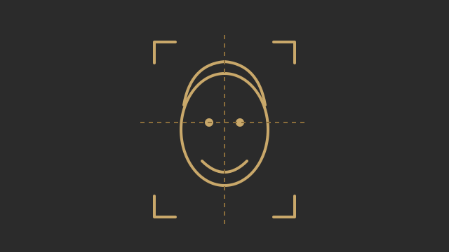

Proyecto académico
Sistema de recomendación de cortes de cabello y barba
Aplicación que proporciona recomendaciones personalizadas de cortes de cabello y barba mediante el análisis de características visuales e inteligencia artificial.
Problema que resuelve: facilita decidir qué corte o estilo se adapta mejor a las características de cada persona.